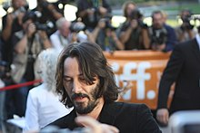
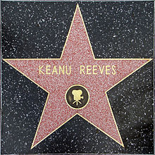

Кариера
Ранни години
Рийвс започва своята актьорска кариера, когато е на 9. Той се появява на сцената в представлението
„Проклетите янки“. На 15 години играе роля в пиесата „Ромео и Жулиета“. Рийвс прави своя екранен дебют в
комедиен сериал по телевизия СВС. През цялата си ранна кариера през 80-те, той се появява в реклами
(включително и една за кока-кола), късометражни филми като драмата „Една крачка назад“ и сценична работа
по култовия филм на Брад Фрейзър „Момчето вълк“ в Торонто. През 1984 г. той става кореспондент на
младежката програма „Стани велик“ по Канадската телевизия.
Първата филмова роля на Рийвс е в хокейния филм на Роб Луи – „Млада кръв“, който е заснет в Канада. В
него той играе вратар. Скоро след появата на филма, Рийвс заминава за Лос Анджелис в своето Волво от
1969. Неговият бивш втори баща Пол Аарън, театрален и телевизионен режисьор, убеждава Ервин Стоф да бъде
мениджър и агент на Рийвс още преди той да е пристигнал в Лос Анджелис. Стоф остава негов мениджър и
коопродуцира много от неговите филми.
След няколко второстепенни роли, Киану Рийвс получава по-значима роля във филма от 1986 – „Брегът на
реката“. Последвалият филмов успех той прекарва като се появява във филми, насочени към младата
аудитория, включително „Непрекъснат запис“ и неочаквано успешната комедия от 1989 – „Чудесното
приключение на Бил и Тед“, която заедно със своето продължение „Измисленото пътуване на Бил и Тед“
определя Рийвс като сладък по природа тийнейджър. Повечето от следващите му описания в пресата и много
от мненията за неговата игра са повлияни от изпълнението му на виреещия в облаците Тед. Рийвс споделя,
че е имал кошмари, които са включени във филма. Други запомнящи се изяви на актьора са ролята му в
„Принцът на Пенсилвания“ от 1988 и „Опасни връзки“, където той си партнира с Глен Клоуз, Джон Малкович и
Мишел Пфайфър.
В първите години на 90-те Рийвс започва да излиза от своя тийнейджърски филмов период. Той се появява
във високо-бюджетни екшъни като „Критична точка“, за което печели наградата на MTV за „най-желан мъж“
през 1992. Рийвс също е включен в различни ниско-бюджетни независими филми, включително добре приетия
филм от 1991: „Моят личен Айдахо“ заедно с негов близък приятел.
Големият пробив
 През 1994 кариерата на Рийвс достига нова висота в резултат от участието му в екшъна „Скорост“. Неговата роля във филма е спорна (освен в „Критична точка“), защото дотогава той взима участие главно в комедии и драми. Той не е бил единственият популярен актьор във филм. Летният екшън има сравнително голям бюджет и е ръководен от кинематографът, станал режисьор Ян де Бонт. Неочакваният международен успех на филма превръща Рийвс и неговата екранна партньорка Сандра Бълок в звезди от голяма величина.
Изборът на Рийвс след „Скорост“ е еклетичен: въпреки успехите си, той никога не спира да приема поддържащи роли и винаги иска да подкрепи експериментални кампании. Той има успех с главната роля в романтичния филм „Разходка сред облаците“. Киану учудва всички като отказва да вземе участие в продължението на „Скорост“ и избира да играе главна роля в театрална постановка на „Хамлет“. Той получава учудващо добри оценки за своята интерпретация на един от най-известните герои на Шекспир. Роджър Луис, критик на „Съндей Таймс“, пише, че: „Той почти превъплъти невинността, невероятната ярост, животинската грация по разломите и пределите, емоционалната несдържаност, която формира образа на принца на Дания... Той е един от тримата най-добри Хамлети, които съм виждал, поради простата причина: той „е“ Хамлет.“
Другите избори на Рийвс след „Разходка в облаците“ търпят критика. Високо-бюджетни филми като „Джони Мнемоник“ и „Верижна реакция“ са критикувани остро и пропадат в бокс офис класациите, докато филми като „Да почувстваш Минесота“ също не носят успех.
Звездата на Алеята на славата
Рийвс започва да се изкачва отново в кариерата си след участието си в хорър драмата „Адвокат на дявола“ заедно с Ал Пачино и Чарлийз Терон. Филмът достига добри позиции в бокс офиса, получава положителни оценки и доказва това, че Рийвс може да играе възрастен човек с кариера, въпреки че много критици смятат, че неговото слабо представяне понижава високото ниво на иначе хубавия филм. 
Научно-фантастичният хит от 1999 – „Матрицата“ затвърждава мястото на Рийвс като международна суперзвезда. Между първата „Матрица“ и нейните продължения Рийвс получава позитивни отзиви за изпълнението си на злоупотребяващия съпруг в „Дарбата“. Освен в „Дарбата“, Рийвс се появява в няколко филма, които търпят критика и не се изкачват в бокс офиса. Такива са „Под наблюдение“, „Месец любов“ („Месец любов“ е романтичен филм драма от 2001 година с участието на Киану Рийвс в ролята на Нелсън Мос и Чарлийз Терон в ролята на Сара Дийвър. Сценарист е Курт Воелкер, режисьор – Пат О’Конър, оператор – Едуард Лахман и композитор – Кристофър Йънг. Това е една от най-неудържимо романтичните истории за живота...), „Аматьорите“. Въпреки това, двете продължения на „Матрицата“ – „Матрицата – презареждане“ и „Матрицата – революции“, филмът „Невъзможно твой“ и хорър екшъна от 2005 – „Константин“ се доказват като успешни в класациите и връщат Рийвс в светлината на прожекторите. Неговият филм от 2006 – „Camera obscūra“ (Камера обскура), базирана на научно-фантастичния роман на Филп К. Дик, получава благосклонни оценки, но „Къщата на езерото“, неговият романтичен филм със Сандра Бълок, не достига очаквания успех.
През 2008 Рийвс взима участие във филмите „Улични крале“ и „Денят, в който Земята спря“.
През януари 2009 беше обявено, че Рийвс ще участва в екшън адаптацията на аниме серийния филм „Каубойски джаз“, който ще излезе през 2011 година. Други проекти, за които се говори, че Рийвс ще участва са самурайския филм „47 Ронин“, „Главен готвач“ – история на Рийвс, писана от Стивън Найт и „Пътници“, където той също ще е и продуцент.